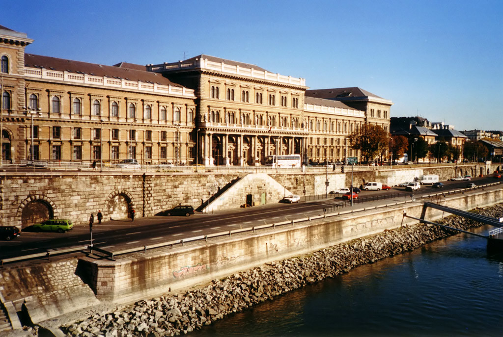
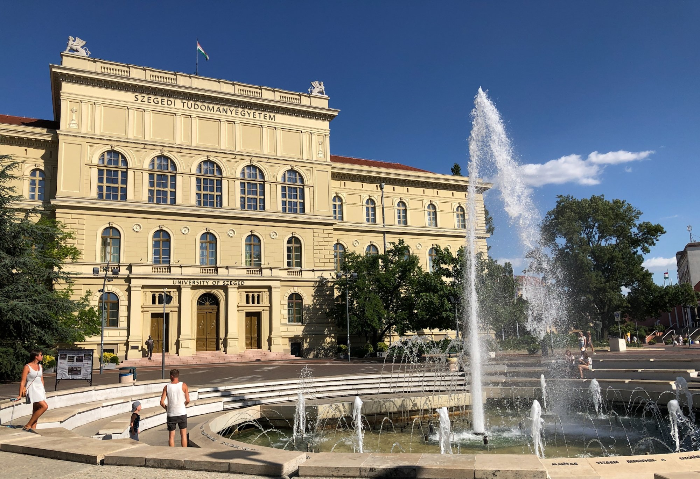
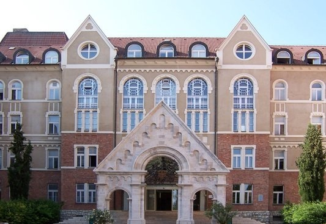
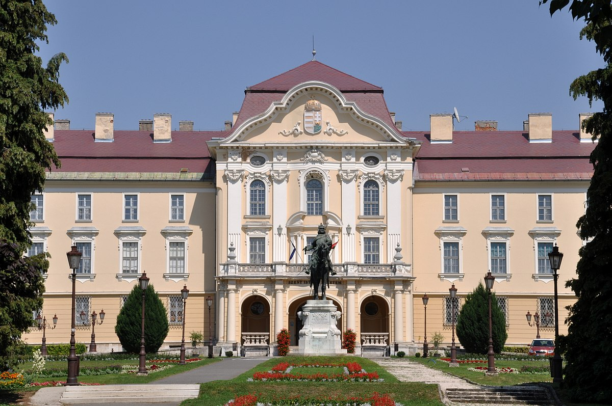
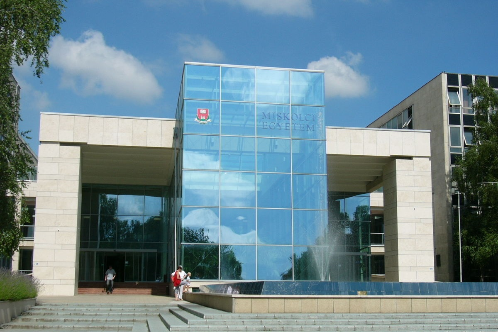
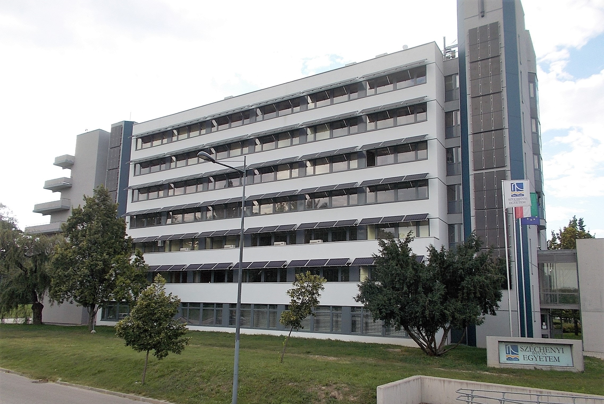
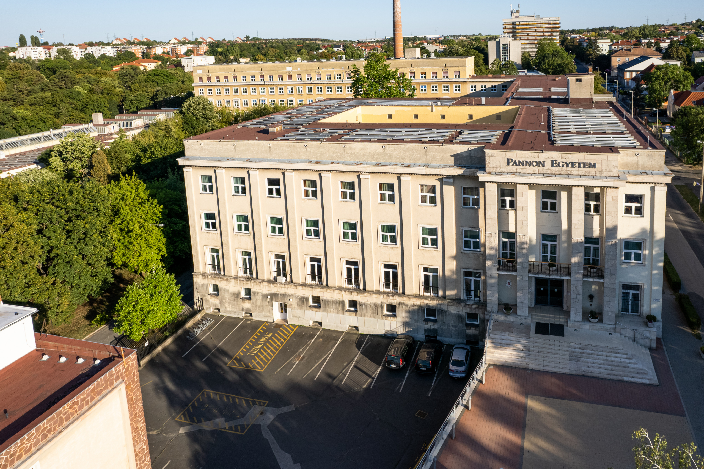

GIỚI THIỆU CHUNG HỆ THỐNG GIÁO DỤC
Hệ thống giáo dục bậc đại học và sau đại học tại Hungary được xây dựng
theo tiêu chuẩn của châu Âu với nhiều trường đại học lâu đời nhất thế
giới.
Thông tin chi chi tiết tại đây:
đây
Hệ thống giáo dục của Hungary đào các khoa ngành đa dạng như:
Agricultural Science; Computer Science and Information Technology; Legal
Science; Economic Science; Medical and Health Science;Arts, Arts and
Humanities, Arts Education; Engineering Science; Social Science; Teacher
Training; Sport Science; Natural Science.
Hungary có nhiều chương trình đào tạo các cấp bậc, như là bậc cử nhân-kĩ
sư (bachelor), bậc thạc sĩ (master), chương trình liên thông đại học -
thạc sĩ (OTM) (one-tier master's programmes) bao gồm bậc Đại học và bậc
Thạc sĩ, bậc tiến sĩ (Ph.D) (chương trình nghiên cứu một phần, nghiên
cứu toàn phần).
Danh sách chi tiết các trường tại Hungary:
đây

Corvinus University of Budapest
QS World University Rankings: 801 - 1000
Tỷ lệ sinh viên/giảng viên: 24
Khoa/Viện: 11
Location: 1093 Budapest, Fővám tér 8, Hungary.
Email: sajto@uni-corvinus.hu
Website: https://www.uni-corvinus.hu/
Facebook: https://www.facebook.com/Corvinus.Official/
Eötvös Loránd University
QS World University Rankings: 651 - 700
Tỷ lệ sinh viên/giảng viên: 12
Khoa/Viện: 8
Location: 1053 Budapest, Egyetem tér 1-3, Hungary.
Website: https://www.elte.hu/
Facebook: https://www.facebook.com/elte.megerim
Budapest University of Technology and Economics
QS World University Rankings: 801 - 1000
Tỷ lệ sinh viên/giảng viên: 14
Khoa/Viện: 8
Location: 1111 Budapest, University of Technology rkp. 3, Hungary.
Email: info@bme.hu
Website: http://www.bme.hu/
University of Debrecen
QS World University Rankings: 591 - 600
Tỷ lệ sinh viên/giảng viên: 12
Khoa/Viện: 15
Location: 4032 Debrecen; University square 1; Hungary.
Email: info@unideb.hu
Website: https://unideb.hu/

University of Szeged
QS World University Rankings: 551-560
International student: 4.285
Khoa/Viện: 12
Location: 6720 Szeged; Dugonics tér 13; Hungary.
Website: https://u-szeged.hu/
Email: international@szte.hu
Facebook: https://www.facebook.com/univszeged

University of Pécs
QS World University Rankings: 651 - 700
Tỷ lệ sinh viên/giảng viên: 10
Khoa/Viện: 10
Location: 7622 Pécs; Vasvári Pál str. 4; Hungary.
Email: international@pte.hu
Website: https://international.pte.hu/
Facebook: https://www.facebook.com/study.in.pecs.hungary/

Hungarian University of Agriculture and Life Sciences
QS World University Rankings: 801 - 1000
Tỷ lệ sinh viên/giảng viên: 9
Khoa/Viện: 9
Campus: Budai, Georgikon, Kaposvár, Károly Róbert, St. Stephen's.
Location: 2100 Gödöllő; Páter Károly utca 1; Hungary.
Website: http://www.uni-mate.hu/

University of Miskolc
QS World University Rankings: 1001 - 1200
Tỷ lệ sinh viên/giảng viên: 12 7
Khoa/Viện: 8
Location: 3515 Miskolc-Egyetemváros; Hungary.
Website: https://www.uni-miskolc.hu/en
Facebook: https://www.facebook.com/unimiskolc

Széchenyi István University
QS World University Rankings: 801 - 1000
Tỷ lệ sinh viên/giảng viên: 12
Khoa/Viện: 10
Location: 9026 Győr; Egyetem tér 1; Hungary.
Email: international@sze.hu
Website: https://www.uni.sze.hu/
Facebook: https://www.facebook.com/Uni.SZE.Gyor/

University of Pannonia
QS EECA University Rankings: 100
Khoa/Viện: 11
Location: 8200 Veszprém,, Egyetem u.10, Hungary.
Email: pr@uni-pannon.hu
Website: http://eng.uni-pannon.hu
Facebook: www.facebook.com/UniPannon
CÁC HỌC BỔNG
STIPENDIUM HUNGARICUM
CHƯƠNG TRÌNH HỌC BỔNG ĐI HỌC TẠI HUNGARY DIỆN HIỆP ĐỊNH
Thời gian: thông thường Tháng 11 năm trước - Tháng 1 năm sau.
Link tìm học bổng:
đây
Những thông tin chi tiết và yêu cầu tối thiểu cho từng bậc học từ phía
Cục Hợp tác Quốc tế có thể được tìm thấy tại
đây và đối với phía Hungary tại
đây
Học bổng Hiệp định được ký kết bởi Bộ Giáo dục & Đào tạo Việt Nam và
Bộ Nguồn nhân lực Hungary nên lưu học sinh còn được nhận bảo hiểm y
tế, tiền phụ cấp, tiền hỗ trợ thuê nhà từ quỹ học bổng Tempus Public
Foundation.
Các chương trình được cấp học bổng bao gồm Đại học, Thạc sĩ, Tiến Sĩ,
Thực tập sau đại học, Liên thông thạc sỹ.
Các ngành học được cấp học bổng phụ thuộc vào danh sách do phía
Hungary quyết định tại
đây
Để ứng tuyển thành công học bổng đi học tại Hungary diện Hiệp định,
ứng viên cần:
- Nộp hồ sơ online trên hệ thống OMS và hồ sơ bản cứng và địa
chỉ được cung cấp bởi Cục Hợp tác Quốc tế. Nộp hồ sơ online trên hệ
thống Dream Apply của quỹ học bổng Tempus Public Foundation.
- Sau khi được phía Bộ Giáo dục & Đào tạo Việt Nam chấp nhận hồ
sơ hợp lệ, ứng viên sẽ được gửi danh sách tới quỹ học bổng Tempus
Public Foundation, lúc này thí sinh được xét theo diện nhà nước cử đi
học.
Về phía Hungary, học bổng mặc định chi trả mọi học phí tại trường cho
sinh viên.
- Tiền phụ cấp hằng tháng: 43 700 HUF (khoảng 120 EUR) cho bậc
Đại học, Thạc Sĩ
- Đối với bậc Tiến Sĩ: 140 000 HUF (4 kì đầu), 180 000 HUF (4 kì
sau)
- Tiền hỗ trợ thuê nhà (chỉ được nhận trong trường hợp, sinh
viên không nhận được chỗ ở trong ký túc xá): 40 000 HUF.
- Phí bảo hiểm: 100 000 HUF (khoảng 275€/người/năm).
Về
phía Việt Nam, học bổng bao gồm hỗ trợ
- 1 cặp vé khứ hồi trong suốt quá trình học.
- Sinh hoạt phí hằng tháng (143-403 USD/1 LHS/1 tháng)
- Cấp bù sinh hoạt phí không áp dụng cho bậc Tiến Sĩ.
Ứng viên không được phép ứng tuyển thêm những học bổng khác như
Eramus+, Eramus Mundus... trong quá trình theo học tại Hungary.
ERAMUS+
CHƯƠNG TRÌNH HỌC BỔNG ERAMUS MUNDUS JOINT MASTERS
Học bổng được cấp bởi EU (Liên minh châu Âu), thu hút các sinh viên từ
nhiều quốc gia tham gia vào bậc học Thạc sĩ của các trường đại học tại
nhiều quốc gia (Pháp, Phần Lan, Bỉ, Đức, ...). Tuy không phải là thành
viên chính thức của học bổng, Việt Nam vẫn là đối tác của Eramus
Mundus Joint Master. Vậy nên, các sinh viên Việt Nam có thể ứng tuyển
một số chương trình đào tạo nhất định của học bổng. Các lợi ích học
bổng bao gồm: miễn học phí, bảo hiểm, phí đi lại.
Nhóm A
Sinh viên ngoài EU: miễn học phí, sinh hoạt phí 1 phí 1 000
Euro/tháng; 4 000 Euro/năm (hỗ trợ đi lại, visa...); bảo hiểm (có thể
được tính riêng hoặc trừ thẳng vào khoản 4 000 Euro tuy vào chương
trình).
Nhóm B
Sinh viên EU hoặc sinh viên ngoài EU những đã ở EU hơn 12 tháng: miễn
học phí; sinh hoạt phí 500 Euro/tháng.
Lưu ý:
Ứng viên vẫn phải nằm trong danh sách đề cử từ trường đại học của
mình. Để biết thông tin chính xác về điều kiện ứng tuyển và hồ sơ
chuẩn bị, sinh viên cần tham khảo tại văn phòng đối ngoại của trường
đại học đang theo học hoặc tại địa chỉ sau:
tại đây
CÁC HỌC BỔNG
MỘT SỐ HỌC BỔNG KHÁC
Sau khi hoàn thành khóa dự bị tiếng Hungary và đã được tiếp nhận vào
trường đại học chính quy, tùy thuộc vào mỗi khoa và trường đại học mà
sinh viên sẽ được cung cấp thông tin qua hệ thống Neptun về các học
bổng ngoài các quỹ được nêu ở Mục 3.1., 3.2., và 3.3. của Chương I.
Các sinh viên quốc tịch Việt Nam, Hungary, hay quốc tịch khác đang
theo học tại các trường đại học ở Hungary đều có cùng quyền lợi được
ứng tuyển nhiều loại học bổng của khoa hay trường đang theo học, chẳng
hạn như học bổng cho sinh viên xuất sắc của khoa hay trường, học bổng
hỗ trợ từ bang (chi trả các khoản sinh hoạt phí, kí túc xá, và các
khoản khác),...
Sinh viên là lãnh đạo của các câu lạc bộ hay tổ chức được công nhận
tại Corvinus University of Budapest sẽ được ứng tuyển học bổng Public
Scholarship và Student Association Scholarship. 10 Sinh viên theo học
tại University of Pécs được ứng tuyển với các học bổng của Bursa
Hungarica, New National Excellence Program, National Higher Education
Scholarship...
Lưu ý: Khuyến nghị các bạn sinh viên thường xuyên theo dõi thông
tin trên website của khoa, của trường khi ĐÃ ĐƯỢC NHẬN vào trường
đại học để nắm bắt được các thông tin về học bổng và ứng tuyển kịp
thời.